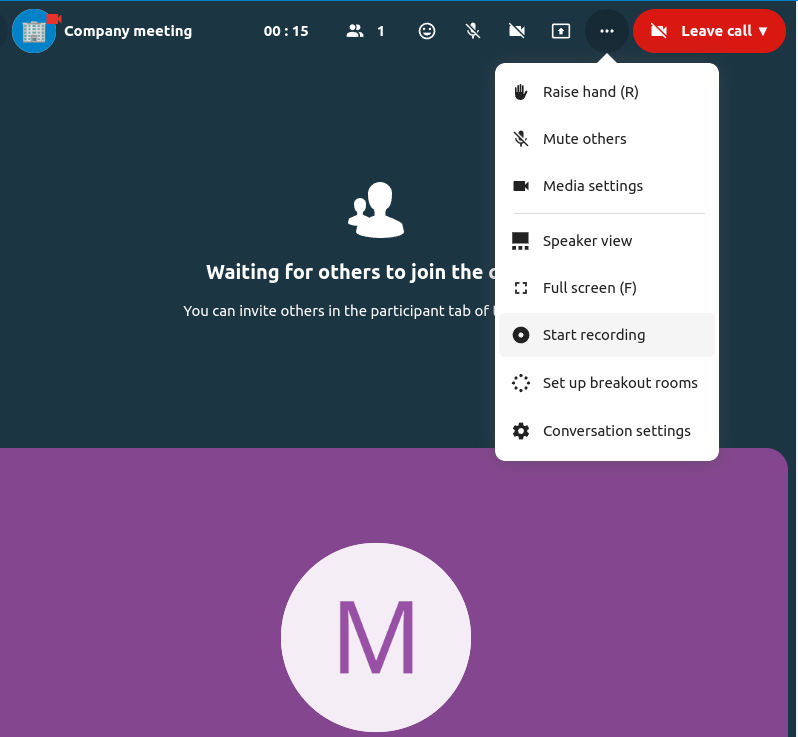
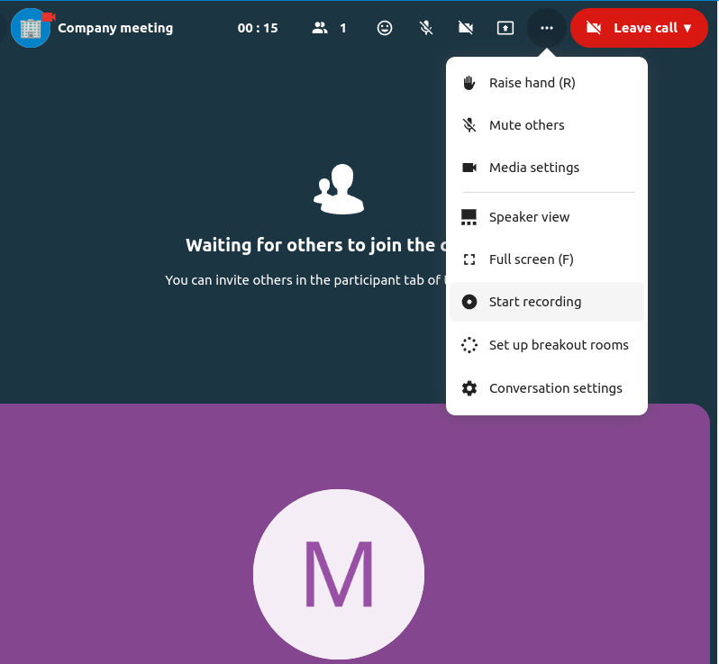

Funcions avançades de Parla
Nextcloud Parla té una sèrie de funcions avançades que els usuaris poden trobar útils.
Matterbridge
La integració de Matterbridge a Nextcloud Parla permet crear «ponts» entre converses de Parla i converses en altres serveis de xat com MS Teams, Discord, Matrix i altres. Podeu trobar una llista de protocols admesos a la pàgina Github de Matterbridge. <https://github.com/42wim/matterbridge#features>`_
Un moderador pot afegir una connexió Matterbridge a la configuració de la conversa de xat.

Cadascun dels ponts té la seva pròpia necessitat de configuració. La informació per a la majoria està disponible al wiki de Matterbridge i es pot accedir darrere del menú més informació al menú .... També podeu accedir directament a la wiki.
Vestíbul
La funció del vestíbul us permet mostrar als hostes una pantalla d’espera fins que comenci la trucada. Això és ideal per a seminaris web amb participants externs, per exemple.

Podeu optar per permetre que els participants s’uneixin a la trucada en un moment específic o quan acomiadeu el vestíbul manualment.
Ordres
Nextcloud permet als usuaris executar accions mitjançant ordres. Una ordre normalment sembla:
/wiki avions
Els administradors poden configurar, habilitar i desactivar ordres. Els usuaris poden utilitzar l’ordre ajuda per esbrinar quines ordres estan disponibles.
/help

Trobeu més informació a la documentació administrativa de Parla.
Parla des de Fitxers
A l’aplicació Fitxers, podeu xatejar sobre fitxers a la barra lateral i fins i tot rebre una trucada mentre l’editeu. Primer has d’unir-te al xat.


A continuació, podeu xatejar o fer una trucada amb altres participants, fins i tot quan comenceu a editar el fitxer.

A Parla, es crearà una conversa per al fitxer. Podeu xatejar des d’allà o tornar al fitxer utilitzant el menú ... a la part superior dreta.

Creeu tasques des del xat o compartiu tasques al xat
Si Targetes està instal·lat, podeu utilitzar el menú ... d’un missatge de xat i convertir el missatge en una tasca de Targetes.


Des de Targetes, podeu compartir tasques en converses de xat.


Sales de treball
Les sales de treball et permeten dividir una trucada de Nextcloud Parla en grups més petits per a debats més centrats. El moderador de la trucada pot crear diverses sales de treball i assignar participants a cada sala.
Configura les sales de treball
Per crear sales de treball, has de ser moderador d’una conversa de grup. Feu clic al menú de la barra superior i feu clic a «Configura sales de grups».

S’obrirà un diàleg on podeu especificar el nombre d’habitacions que voleu crear i el mètode d’assignació dels participants. Aquí se us presentaran 3 opcions:
Assigna participants automàticament: Parla assignarà participants automàticament a les sales.
Assigna participants manualment: passaràs per un editor de participants on podràs assignar participants a sales.
Permet als participants triar: els participants podran unir-se ells mateixos a les sales de treball.

Gestiona les sales de treball
Un cop creades les sales de treball, les podreu veure a la barra lateral.

Des de la capçalera de la barra lateral
Iniciar i aturar les sales de treball: això traslladarà tots els usuaris de la conversa parental a les seves respectives sales de treball.
Emet un missatge a totes les sales: això enviarà un missatge a totes les sales al mateix temps.
Fes canvis als participants assignats: això obrirà l’editor de participants on podràs canviar quins participants estan assignats a quina sala de treball. Des d’aquest diàleg també és possible suprimir les sales de treball.

Des de l’element de la sala de grups de la barra lateral, també podeu unir-vos a una sala de grups particulars o enviar un missatge a una sala concreta.

Call recording
The recording feature provides users with an opportunity to:
Start and stop recordings during a call.
Record the video and audio stream of the speaker, as well as screen share.
Access, share and download recorded files for future reference or distribution.
Enabling this feature requires the recording server to be set up by the system administration.
Manage a recording
The moderator of the conversation can start a recording together with a call start or anytime during a call:
Before the call: tick the checkbox «Start recording immediately with the call» in «Media settings», then click on «Start call».
During the call: click on the top-bar menu, then click «Start recording».
 

The recording will start shortly, and you will see a red indicator next to the call time. You can stop the recording at any time while the call is still ongoing by clicking on that indicator and selecting «Stop recording», or by using the same action in the top-bar menu. If you do not manually stop the recording, it will end automatically when the call ends.

After stopping a recording, the server will take some time to prepare and save the recorded file. The moderator, who started the recording, receives a notification when the file is uploaded. From there, it can be shared in the chat.


Recording consent
For compliance reasons with various privacy rights, it is possible to ask participants for consent to be recorded before joining the call. The system administration has the flexibility to utilize this feature in several ways:
Disable consent completely.
Enable mandatory consent system-wide, requiring consent for all conversations.
Allow moderators to configure this option on a conversation level. In such cases, moderators can access the conversation settings to configure this option accordingly:

If recording consent is enabled, every participant, including moderators, will see a highlighted section in the «Media settings» before joining a call. This section informs participants that the call may be recorded. To give explicit consent for recording, participants must check the box. If they do not give consent, they will not be allowed to join the call.